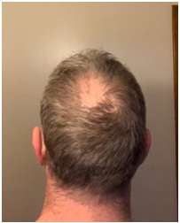
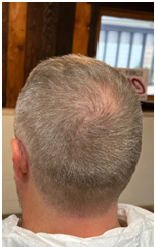

UltraMito Restore 3.0
Restore is a third-generation product in the UltraMito line of mitochondria-related products. It was created by scientist and formulator, Dr. Bevan Elliott. Informed by his background in nanotechnology, physics and emerging science, he created a new, proprietary technology designed to potentiate the mitochondria.
About Restore
URestore is an adaptogenic formulation designed to promote:
- Stimulant-free, natural energy from the mitochondria that can outlast your longest day
- Enhanced brain ability, with the vision, clarity, and focus to meet your every challenge
- Mood enhancement and chronic stress reduction
- Deeper, more restorative sleep
- Cellular detoxification and repair
- Immune system enhancement with anti-parasitic and anti-pathogenic support
- Body-wide support for major organ systems
- Enhanced ability for the body to manage itself and maintain homeostasis
To accomplish these objectives, natural ingredients are preferred because they tend to be multi-functional and have fewer side effects. Restore uses two ancient super foods: olive oil, along with olive leaf, and black seed oil. Both abound with health benefits and have been used successfully as natural remedies for thousands of years. To those, additional antioxidants, adaptogens, and essential oils are added that have specific functionality and documented health benefits. These two super foods, along with the additional ingredients, are amplified by a delivery system called XDS (eXponential Delivery System). This proprietary nutrient delivery system was developed by Dr.Elliott, to target every cell in the body to deliver nutrition deep into cells and into mitochondria. Why is this important? Because, to have the very best results, great natural ingredients alone are not good enough. The natural bioactive ingredients, typically, contained in nutritional supplements can have poor deliverability and don’teasily get to where they need to go, to do the most good. XDS formulations rectify this problem in a powerful way. It, typically, uses only a fraction of the normal daily dose, for a given bioactive ingredient, compared to how much of the same ingredient is commonly used in other nutritional supplement formulations. Yet XDS is so effective, that much greater benefits can result. Nutrients tend to work faster and with much greater results for more people.
The benefits of Restore can be especially important to:
- Those experiencing an extreme energy deficit perhaps due to long hours, lack of sleep, side effects from medication, aging or generally being run down
- Athletes striving for extreme performance
- Those whose occupations require organization, sharp focus, quick thinking, creativity and problem-solving ability
- Working moms and dads who want to have the mental and physical energy, at the end of the day, to enjoy some "me time" indulgences
- Anyone who just wants to be as healthy as they can, possibly, be with less emotional stress and physical discomfort.
Restore was made for you! Try Restore today and launch a rescue mission for your cells powered by your mitochondria.
Restore Ingredients
- Extra Virgin Olive Oil(olea europaea)
- Black seed oil(nigella sativa)
- Olive leaf(olea europaea)
- Astaxanthin
- Turmeric root
- Panax ginseng root
- Cordyceps
- Spirulina
- Lutein
- Bilberry leaf
- Zeaxanthin
- Palmitoylethanolamide(PEA)
- Fenugreek
- Black currant seed oil
- Acetyl-L-carnitine
- Ecklonia cava extract
- Schisandra
- Eleuthero root
- CoQ10 (ubiquinone)
- Rhodiola rosea
- Bacopa monnieri extract
- Maca root extract
- Astragalus root extract
- R-lipoic acid
- Magnolol
- Honokiol
- Echinacea root powder
- L-theanine
- Benfotiamine
- Maral root extract
- Tributyrin
- Celery seed extract
- Pterostilbene
- Luteolin
- Piperine
- Turmeric oil
- Lemon oil
- Orange oil
- Cinnamon oil
- Frankincense oil
- Beta-Caryophyllene
- Vitamin K2-7
- Vitamin A
- Vitamin D3
How do I take Restore?
The recommended dose of Restore is 4 mL or 4/5 teaspoon. This is a little less than a full teaspoon per day. A loading dose of double or more for the first week is ok. How you take Restore is a matter of personal preference. It can be taken morning or evening in a single dose or split up, with or without food. Some people have reported having very vivid dreams, in some cases, for the first time since they were very young. If you don’t want to dream, consider taking restore earlier in the day or first thing in the morning.
Restore, Testimonies: Hear what people are saying (click on the links below to hear recordings)
Dr Bevan Elliott and Dr Dan Sollowayre the new UltraMito Restore ingredients (click the link below to listen) https://app.box.com/s/h756lodd0r9496dym9zbms5o3lzjb745
Saturday Health and Wellness call on how to take Restore and what to expect https://app.box.com/s/c1v8sjraqq6omc0rx5sbpl7u17h4d6wz
Dr Bevan Elliott on the role on mitochondriain omaging https://app.box.com/s/3hwqv1lnny464ln2ijhwsoxbd1b6x2l0
David and Maricela S - Two weeks on MoreMito and my wife’s bodylooked 10 years younger … https://app.box.com/s/7yu9si2u7wniz6zw1obispw56sjq88vn
Jon K – My bald spot is regrowing hair after I used Restored and Rejuvenated it … https://app.box.com/s/3boln16xyui45iyla274gqk8ka1ratkt
 

Kent H. - UT – I experienced long day energy, less pain and enhanced illnessrecovery https://app.box.com/s/x5ae85xu22uddetm77dv6bb52v2qegh2
Keith G.–Chicago- My4-year-oldinjurywasresolvedinminutes https://app.box.com/s/t5t395dcchd0fpbrwnnxhl0x91nv2azq
Marsha B. – Milwaukee – My 30-year digestive issue resolved in days. https://app.box.com/s/a0l3lxyjs6zlpjekg29f54iaf6j9yakg
Winston C. – Chicago - 5 year injury disappeared after 3 days on Restore and so did my panic attacks. https://app.box.com/s/tggfy8aneh3sny71ge1ta5j5ytyov8du
Gary B. – Spokane – My blood sugar was so high I was warned that I could lose both legs. https://app.box.com/s/gb6ijz266bafwauqftotys80t3fkb4jw